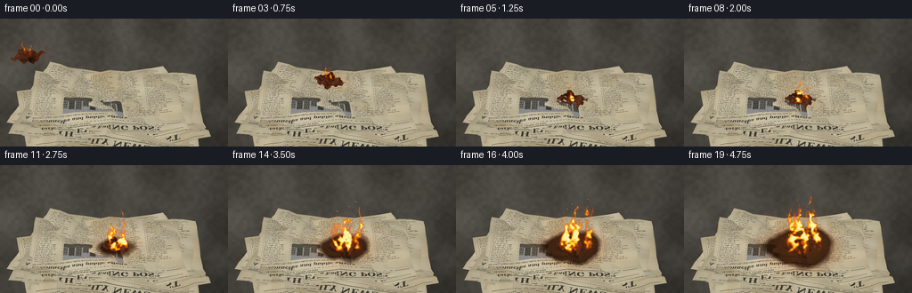
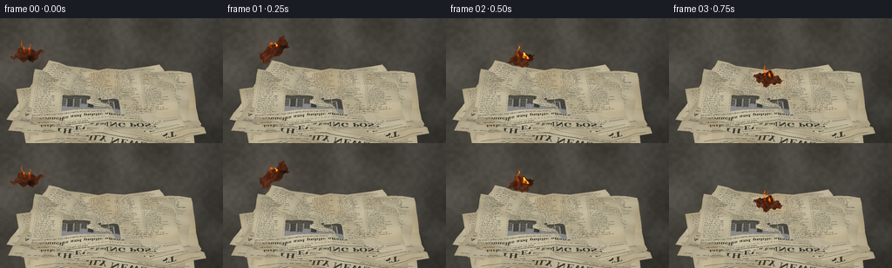

CODING AGENTS AS PIXEL WORLD MODELS
traex/GPT-6.1-Sol · phygen_145
点击播放 · 原生 RGB 像素
逐轮保存的候选
回放视频、检查图与代码变化。
每份候选均可单独播放。实际图片检查记录在下方工具轨迹中。
候选 01播放与检查图
点击播放 · 原生 RGB 像素


展开代码变化
--- 上一保存版本
+++ 本次保存版本
@@ -0,0 +1,343 @@
+"""Deterministic procedural RGB animation: a burning rag lands on old newspapers.
+Only numpy/Pillow geometry, rasterization, noise and compositing are used.
+"""
+from pathlib import Path
+import math
+import numpy as np
+from PIL import Image, ImageDraw, ImageFont, ImageFilter
+import artifact_io
+
+ROOT = Path(__file__).resolve().parent
+W, H, S = 256, 144, 3
+WW, HH = W*S, H*S
+rng = np.random.default_rng(145)
+
+def smooth_noise(w,h,scale,seed):
+ r = np.random.default_rng(seed)
+ a = r.random((max(2,h//scale+2),max(2,w//scale+2)))
+ return np.asarray(Image.fromarray(np.uint8(a*255)).resize((w,h),Image.Resampling.BICUBIC),dtype=np.float32)/255
+
+YY, XX = np.mgrid[:HH,:WW].astype(np.float32)
+# An elevated fixed camera looking down at a shallow, irregular pile.
+cam = np.array([0.,-8.2,7.1]); target=np.array([0.,0.,.2])
+fwd=(target-cam); fwd/=np.linalg.norm(fwd)
+right=np.cross(fwd,[0,0,1]); right/=np.linalg.norm(right)
+up=np.cross(right,fwd)
+focal=1310.
+def project(points):
+ p=np.asarray(points)-cam
+ dep=p@fwd
+ return np.stack([W*S/2+focal*(p@right)/dep, 99*S-focal*(p@up)/dep, dep],axis=-1)
+
+# Matte concrete: the restrained background gives the paper and flame contrast.
+coarse=smooth_noise(WW,HH,95,11)-.5
+medium=smooth_noise(WW,HH,13,12)-.5
+fine=smooth_noise(WW,HH,3,13)-.5
+lighting = 1.0-.22*(XX/WW)+.11*(1-YY/HH)
+vignette=1-.19*((XX/WW-.5)**2*2+(YY/HH-.53)**2)
+ground=(np.array([79,76,69])[None,None,:]+coarse[...,None]*21+medium[...,None]*9+fine[...,None]*4)*lighting[...,None]*vignette[...,None]
+# Fine dents and speckled grit, kept unobtrusive.
+gr=rng.random((HH,WW)); ground[gr>.997]*=.66
+shadow=np.exp(-(((XX/S-130)/88)**2+((YY/S-111)/23)**2)*2)
+ground*=1-.47*shadow[...,None]
+ground=np.clip(ground,0,255)
+
+serif='/usr/share/fonts/truetype/dejavu/DejaVuSerif.ttf'
+bold='/usr/share/fonts/truetype/dejavu/DejaVuSerif-Bold.ttf'
+texts=['After the storm, a city rebuilds', 'Council plans new rail service', 'Markets rally in late trading', 'A new chapter for the harbor', 'Local voices and public affairs', 'The changing face of our town']
+def newspaper_texture(k):
+ tw,th=840,640
+ rr=np.random.default_rng(500+k)
+ n=smooth_noise(tw,th,110,200+k)-.5
+ f=rr.normal(0,1.35,(th,tw))
+ base=np.array([202,192,163])+rr.uniform(-9,9)
+ a=base+n[...,None]*20+f[...,None]
+ # Paper fibers, watermarks, oxidized edge stains.
+ yy,xx=np.mgrid[:th,:tw]
+ edge=np.minimum.reduce([xx,tw-1-xx,yy,th-1-yy])
+ a-=np.exp(-edge/18)[...,None]*np.array([11,14,16])
+ for q in range(5):
+ cx,cy=rr.uniform(0,tw),rr.uniform(0,th)
+ stain=np.exp(-((xx-cx)**2/(rr.uniform(45,160)**2)+(yy-cy)**2/(rr.uniform(45,120)**2)))
+ a-=stain[...,None]*np.array([4,8,13])
+ im=Image.fromarray(np.uint8(np.clip(a,0,255)))
+ d=ImageDraw.Draw(im)
+ ink=(61,59,50)
+ d.line((25,22,815,22),fill=ink,width=2)
+ head=['THE DAILY NEWS','THE EVENING POST','CITY CHRONICLE'][k%3]
+ font=ImageFont.truetype(bold,50 if k%3!=2 else 44)
+ box=d.textbbox((0,0),head,font=font)
+ d.text(((tw-box[2])/2,25),head,font=font,fill=ink)
+ d.line((24,88,816,88),fill=ink,width=3)
+ small=ImageFont.truetype(serif,12)
+ d.text((28,94),'ESTABLISHED 1892 ⢠MONDAY EDITION',font=small,fill=ink)
+ d.text((619,94),'VOL. LXXIV No. 218',font=small,fill=ink)
+ d.line((24,116,816,116),fill=ink,width=1)
+ headline=ImageFont.truetype(bold,30)
+ d.text((28,129),texts[k%len(texts)],font=headline,fill=ink)
+ d.text((29,173),'REPORTS, COMMENT AND NEWS FROM AROUND THE WORLD',font=small,fill=ink)
+ # Tight, justified columns of real serif text.
+ body=ImageFont.truetype(serif,10)
+ words=('the city and its people have seen a change in recent days as local officials '
+ 'reported on the future of the region. Work continues along the river and '
+ 'new plans were announced yesterday. Residents gathered to discuss the '
+ 'latest developments and the council will meet again next week. ').split()
+ for col in range(5):
+ x=29+col*158
+ y0=202
+ if col in [1,2] and k%2==0: y0=370
+ d.line((x-7,200,x-7,613),fill=(114,109,94),width=1)
+ for row,y in enumerate(range(y0,615,14)):
+ idx=(row*5+col*23+k*9)%len(words)
+ line=' '.join((words*3)[idx:idx+4])
+ while d.textlength(line,font=body)>143:
+ line=line.rsplit(' ',1)[0]
+ d.text((x,y),line,font=body,fill=(73,71,61))
+ # A grainy archival photograph of a streetscape inside the newspaper.
+ if k%2==0:
+ pw,ph=293,152
+ photo=np.zeros((ph,pw,3),dtype=np.uint8)
+ nn=rr.normal(0,6,(ph,pw))
+ photo[:]=np.clip(146+nn[...,None],0,255)
+ pim=Image.fromarray(photo); pd=ImageDraw.Draw(pim)
+ pd.rectangle((0,110,pw,ph),fill=(86,83,71))
+ for b in range(8):
+ bx=b*39-8; top=int(rr.uniform(17,62)); shade=int(rr.uniform(63,122))
+ pd.polygon([(bx,top+5),(bx+31,top),(bx+31,118),(bx,123)],fill=(shade,shade-2,shade-12))
+ pd.line((bx-2,top+4,bx+33,top-2),fill=(50,49,42),width=3)
+ for wy in range(top+12,110,17):
+ for wx in range(bx+5,bx+29,10):
+ pd.rectangle((wx,wy,wx+4,wy+8),fill=(49,48,42))
+ pa=np.asarray(pim).copy().astype(float)
+ pa+=rr.normal(0,7,pa.shape[:2])[...,None]
+ pim=Image.fromarray(np.uint8(np.clip(pa,0,255)))
+ im.paste(pim,(188,202)); d=ImageDraw.Draw(im)
+ d.text((190,357),'The old quarter, viewed from the main street.',font=ImageFont.truetype(serif,9),fill=ink)
+ # Fold lines are a little lighter on one lip, darker on the other.
+ d.line((419,115,426,634),fill=(166,156,131),width=2)
+ d.line((421,115,428,634),fill=(218,207,179),width=1)
+ return np.asarray(im,dtype=np.float32)
+
+canvas=ground.copy()
+depth=np.full((HH,WW),1e6,np.float32)
+worldmap=np.zeros((HH,WW,3),np.float32)
+papermask=np.zeros((HH,WW),np.float32)
+
+def raster_triangle(verts, uv, texture, shade, out, zbuf, record=False):
+ pts=project(verts)
+ xmin=max(0,int(np.floor(pts[:,0].min()))); xmax=min(WW-1,int(np.ceil(pts[:,0].max())))
+ ymin=max(0,int(np.floor(pts[:,1].min()))); ymax=min(HH-1,int(np.ceil(pts[:,1].max())))
+ if xmin>xmax or ymin>ymax:return
+ x=XX[ymin:ymax+1,xmin:xmax+1]+.5;y=YY[ymin:ymax+1,xmin:xmax+1]+.5
+ x0,y0=pts[0,:2];x1,y1=pts[1,:2];x2,y2=pts[2,:2]
+ den=(y1-y2)*(x0-x2)+(x2-x1)*(y0-y2)
+ if abs(den)<1e-6:return
+ b0=((y1-y2)*(x-x2)+(x2-x1)*(y-y2))/den
+ b1=((y2-y0)*(x-x2)+(x0-x2)*(y-y2))/den
+ b2=1-b0-b1
+ inv=b0/pts[0,2]+b1/pts[1,2]+b2/pts[2,2]
+ z=1/np.maximum(inv,1e-10)
+ zb=zbuf[ymin:ymax+1,xmin:xmax+1]
+ m=(b0>=-.0001)&(b1>=-.0001)&(b2>=-.0001)&(z<zb)
+ if not m.any():return
+ b=np.stack([b0/pts[0,2],b1/pts[1,2],b2/pts[2,2]],axis=-1)*z[...,None]
+ texuv=b@uv
+ tu=np.clip(texuv[...,0]*(texture.shape[1]-1),0,texture.shape[1]-1).astype(int)
+ tv=np.clip(texuv[...,1]*(texture.shape[0]-1),0,texture.shape[0]-1).astype(int)
+ colors=texture[tv,tu]*shade
+ sub=out[ymin:ymax+1,xmin:xmax+1];sub[m]=colors[m];zb[m]=z[m]
+ if record:
+ wm=worldmap[ymin:ymax+1,xmin:xmax+1];wm[m]=(b@verts)[m]
+ pm=papermask[ymin:ymax+1,xmin:xmax+1];pm[m]=1
+
+light=np.array([-.5,-.3,1]);light/=np.linalg.norm(light)
+def draw_mesh(vertices,texture,out,zbuf,record=False,material=1):
+ ny,nx=vertices.shape[:2]
+ uv=np.stack(np.meshgrid(np.linspace(0,1,nx),np.linspace(0,1,ny)),axis=-1)
+ for j in range(ny-1):
+ for i in range(nx-1):
+ for inds in [((j,i),(j,i+1),(j+1,i+1)),((j,i),(j+1,i+1),(j+1,i))]:
+ vv=np.array([vertices[a,b] for a,b in inds]); tt=np.array([uv[a,b] for a,b in inds])
+ normal=np.cross(vv[1]-vv[0],vv[2]-vv[0]);normal/=max(np.linalg.norm(normal),1e-6)
+ if normal[2]<0:normal=-normal
+ shade=(.62+.37*max(0,normal@light))*material
+ raster_triangle(vv,tt,texture,shade,out,zbuf,record)
+
+# Many visibly overlapping sheets; the top leaves have lifted and creased corners.
+for k in range(11):
+ rr=np.random.default_rng(800+k)
+ wid=rr.uniform(3.65,4.75); hei=rr.uniform(2.45,3.2)
+ angle=rr.uniform(-.34,.31)
+ cx=rr.uniform(-.28,.28);cy=rr.uniform(-.25,.25)
+ u,v=np.meshgrid(np.linspace(-.5,.5,14),np.linspace(-.5,.5,11))
+ x=u*wid;y=v*hei
+ z=.025+k*.030+.012*np.sin(u*18+k)+.018*np.cos(v*23+u*6)
+ z+=.018*np.abs(np.sin(u*11+v*13+k))
+ if k>6:
+ z+=.06*np.sin(u*9+v*7+k)
+ z+=rr.uniform(.18,.40)*np.exp(-((u-.5)**2/.017+(v+.5)**2/.03))
+ z+=rr.uniform(.08,.24)*np.exp(-((u+.5)**2/.025+(v-.5)**2/.025))
+ # A slight ridge along a central fold.
+ z+=.055*np.exp(-(u-.035)**2/.003)
+ vertices=np.stack([cx+x*np.cos(angle)-y*np.sin(angle),cy+x*np.sin(angle)+y*np.cos(angle),z],axis=-1)
+ draw_mesh(vertices,newspaper_texture(k),canvas,depth,True)
+
+paperbase=canvas.copy()
+# Woven, frayed rag, deliberately distinct from cream newspaper.
+cth,ctw=140,190
+cy,cx=np.mgrid[:cth,:ctw]
+clothnoise=smooth_noise(ctw,cth,20,93)
+clothtex=np.zeros((cth,ctw,3),np.float32)
+clothtex[:]=[94,47,27]
+clothtex+=(clothnoise-.5)[...,None]*27
+clothtex+=((cx%4==0)*5-(cy%4==0)*8)[...,None]
+clothtex*=1-.5*np.exp(-((cx-ctw*.8)**2+(cy-cth*.2)**2)/2600)[...,None]
+
+# Noise fields advected vertically through flame and smoke.
+noise1=smooth_noise(WW,HH,16,102)
+noise2=smooth_noise(WW,HH,7,103)
+noise3=smooth_noise(WW,HH,39,104)
+
+def advect(field,dx,dy):
+ # Periodic interpolation preserves temporal coherence and avoids fresh random frames.
+ fx=(XX+dx)%WW;fy=(YY+dy)%HH
+ ix=fx.astype(int);iy=fy.astype(int);ax=fx-ix;ay=fy-iy
+ return ((1-ax)*(1-ay)*field[iy,ix]+ax*(1-ay)*field[iy,(ix+1)%WW]+(1-ax)*ay*field[(iy+1)%HH,ix]+ax*ay*field[(iy+1)%HH,(ix+1)%WW])
+
+def cloth_state(t):
+ if t<.92:
+ q=t/.92
+ p=np.array([-2.10+2.17*q,-.15+.23*q,1.95+1.00*q-2.56*q*q])
+ angle=-.50+q*3.3
+ tilt=.40*np.sin(7*q)+.12
+ else:
+ q=min(1,(t-.92)/.35)
+ p=np.array([.07,.08,.39+.025*np.exp(-q*5)*np.cos(q*12)])
+ angle=2.54;tilt=.03*np.exp(-q*4)
+ return p,angle,tilt
+
+def draw_cloth(t,out):
+ p,angle,tilt=cloth_state(t)
+ u,v=np.meshgrid(np.linspace(-.5,.5,15),np.linspace(-.5,.5,11))
+ x=u*.69;y=v*.52
+ x+=.019*np.sin(v*49+u*13);y+=.014*np.cos(u*51+v*15)
+ z=.050*np.sin(u*13+v*6)+.025*np.cos(v*19-u*4)+tilt*x
+ verts=np.stack([p[0]+x*np.cos(angle)-y*np.sin(angle),p[1]+x*np.sin(angle)+y*np.cos(angle),p[2]+z],axis=-1)
+ db=depth.copy()
+ draw_mesh(verts,clothtex,out,db,False,1)
+ # Loose dark fibers at the rag's edge.
+ im=Image.fromarray(np.uint8(np.clip(out,0,255)));d=ImageDraw.Draw(im)
+ for k in range(16):
+ i=k%15;j=0 if k<8 else 10
+ a=verts[j,i];b=a+np.array([.023*np.cos(k*4),.018*np.sin(k*3),-.02])
+ q=project([a,b]);d.line(tuple(q[:,:2].ravel()),fill=(57,33,22),width=1)
+ return np.asarray(im,dtype=np.float32)
+
+def render(t):
+ out=paperbase.copy()
+ p,angle,tilt=cloth_state(t)
+ bp=project([p])[0]
+ growth=np.clip((t-1.2)/3.4,0,1)
+ flick=.92+.07*np.sin(t*22)+.055*np.sin(t*37+1)
+ # Brown scorch halo and a dark, irregular carbonized center on the paper.
+ dist=np.sqrt((worldmap[...,0]-.07)**2+1.12*(worldmap[...,1]-.08)**2)
+ radius=.13+growth*.89
+ irregular=dist+(noise3-.5)*.17+(noise2-.5)*.035
+ char=np.clip((radius-irregular)/.19,0,1)*papermask*min(1,max(0,(t-.9)*1.5))
+ burnt=out*np.array([.19,.13,.10])+np.array([9,7,5])
+ out=out*(1-char[...,None])+burnt*char[...,None]
+ brown=np.exp(-((irregular-radius)/.17)**2)*papermask*growth*.35
+ out*=1-brown[...,None]*np.array([.13,.32,.46])
+ # Light falling onto nearby sheets and concrete follows fire strength.
+ bx,by=bp[:2]/S
+ intensity=(.20+.78*growth)*flick
+ halo=np.exp(-(((XX/S-bx)/(25+growth*21))**2+((YY/S-by)/(13+growth*16))**2)*1.3)
+ out+=halo[...,None]*np.array([47,19,2])*intensity
+ out=draw_cloth(t,out)
+ # Soft, turbulent smoke billowing upward behind the visible flames.
+ adv=advect(noise1,-t*9,t*42)
+ advfine=advect(noise2,t*11,t*71)
+ if t>.3:
+ sm=np.zeros((HH,WW),np.float32)
+ smokelevel=.045+.13*growth
+ for i in range(15):
+ age=(i+.15)/14
+ sy=by-10-age*(38+growth*64)
+ sx=bx+np.sin(age*8-t*1.6)*(2+age*8)+age*growth*13
+ rad=(4+age*(8+growth*12))*S
+ puff=np.exp(-(((XX-sx*S)/rad)**2+((YY-sy*S)/(rad*.8))**2)*1.5)
+ sm+=puff*smokelevel*(.75+.25*np.sin(i*3+t*2))*(1-age*.6)
+ sm=np.clip(sm*(.45+.8*adv+.25*advfine),0,.36)
+ smokecolor=np.zeros_like(out)+[81,78,72]
+ # Backlit wisps turn warm close to the ignition.
+ smokecolor+=halo[...,None]*np.array([30,16,2])
+ out=out*(1-sm[...,None])+smokecolor*sm[...,None]
+ # Multiple tapering flame jets. A transported scalar field supplies torn,
+ # irregular boundaries and translucent tongues rather than solid polygons.
+ density=np.zeros((HH,WW),np.float32)
+ noise=.54*advect(noise1,t*13,t*88)+.31*advect(noise2,-t*16,t*137)+.15*advect(noise3,t*3,t*44)
+ if t<.95:
+ bases=[(bx-4,by-3,15,3.2),(bx+3,by-1,12,3.0),(bx+7,by,9,2.5)]
+ else:
+ bases=[]
+ for i in range(11):
+ a=i*2.399
+ spread=3+growth*18
+ sx=bx+np.cos(a)*spread*(.35+.65*(i%3)/2)
+ sy=by+np.sin(a)*(2+growth*7)
+ delay=max(0,(t-1.1-(i%4)*.22)/1.3)
+ local=np.clip(delay,0,1)
+ ht=(13+growth*(25+13*np.sin(i*2.1)**2))*local
+ ht*=1+.18*np.sin(t*15+i*2)+.10*np.sin(t*26+i)
+ if i in [1,5,8]:ht*=1.13
+ bases.append((sx,sy,max(3,ht),2.2+growth*(2.5+(i%3)*.6)))
+ # A permanent smaller jet at the initially burning rag edge.
+ bases.append((bx-3,by-2,17+growth*23,3+growth*2))
+ for i,(sx,sy,height,width) in enumerate(bases):
+ v=(sy*S-YY)/(height*S)
+ vv=np.clip(v,0,1)
+ lean=(-3 if t<.95 else 0)+np.sin(i*2+t*2.8)*(3+growth*4)
+ mid=sx*S+lean*S*vv+S*(1.1+growth*2.8)*np.sin(vv*7-t*7+i*2)*np.sin(vv*np.pi)
+ wid=width*S*(1-vv)**.72*(.88+.18*np.sin(vv*15+t*11+i))
+ mid+=(noise-.5)*S*(3+growth*5)*np.sin(vv*np.pi)
+ lateral=(XX-mid)/np.maximum(wid,.6)
+ jet=np.exp(-lateral*lateral*1.8)*(1-vv)**.18
+ jet*=np.clip((noise-.22)*2,0,1.25)
+ jet*=np.clip(v*18+1,0,1)*np.clip((1-v)*18,0,1)
+ jet[(v<-.055)|(v>1)]=0
+ density+=jet*.92
+ density=np.clip(density,0,2)
+ flamealpha=np.clip((density-.15)*1.6,0,.97)
+ temp=np.clip((density-.18)/1.14,0,1)
+ palette=np.array([[174,39,4],[245,76,4],[255,130,7],[255,195,27],[255,231,89],[255,249,173]],np.float32)
+ vtemp=temp*5;ip=np.minimum(vtemp.astype(int),4);fr=vtemp-ip
+ fc=palette[ip]*(1-fr[...,None])+palette[ip+1]*fr[...,None]
+ # Small warm bloom, without obscuring the rag or printed sheets.
+ glow=np.asarray(Image.fromarray(np.uint8(flamealpha*255)).filter(ImageFilter.GaussianBlur(2.3*S)),dtype=float)/255
+ out+=glow[...,None]*np.array([32,10,1])
+ out=out*(1-flamealpha[...,None])+fc*flamealpha[...,None]
+ # Tiny ember pinpoints lifted by buoyant flow; few and with continuous paths.
+ im=Image.fromarray(np.uint8(np.clip(out,0,255)));d=ImageDraw.Draw(im)
+ for i in range(12):
+ period=1.7+i*.047
+ age=(t+i*.213)%period
+ if t<1.2 or age>1.0 or i>2+int(growth*9):continue
+ ex=bx+np.sin(i*8+age*3)*(4+growth*11)+age*4
+ ey=by-8-age*(35+growth*14)
+ rr=.27*S*(1-age*.4)
+ color=(255,int(164+55*(1-age)),48)
+ d.ellipse((ex*S-rr,ey*S-rr,ex*S+rr,ey*S+rr),fill=color)
+ # Downsampling is the optical antialiasing step; fine grain is stable.
+ im=im.resize((W,H),Image.Resampling.LANCZOS)
+ ar=np.asarray(im,dtype=np.float32)
+ film=np.random.default_rng(4500).normal(0,.38,(H,W,1))
+ return np.uint8(np.clip(ar+film,0,255))
+
+if __name__=='__main__':
+ frames=[]
+ for i in range(20):
+ frames.append(render(i/4))
+ print('Rendered',i,flush=True)
+ frames=np.stack(frames)
+ artifact_io.save(frames,ROOT)
+ print('Saved:',frames.shape,frames.dtype,flush=True)
可观测工具轨迹
实际执行的命令与返回图片。
命令 1exit 0
/bin/bash -lc "ls -la && cat prompt.txt && printf '\\n---RULES---\\n' && cat GENERATION_RULES.md && printf '\\n---SPEC---\\n' && cat task_spec.json"
命令 2exit 0
/bin/bash -lc "cat artifact_io.py && python - <<'PY'
import PIL,numpy
print('numpy',numpy.__version__,'pillow',PIL.__version__)
PY"命令 3exit 0
/bin/bash -lc 'fc-list | head -25'
命令 4exit 0
/bin/bash -lc "cat > generate.py <<'PY'
\"\"\"Deterministic procedural RGB animation: a burning rag lands on old newspapers.
Only numpy/Pillow geometry, rasterization, noise and compositing are used.
\"\"\"
from pathlib import Path
import math
import numpy as np
from PIL import Image, ImageDraw, ImageFont, ImageFilter
import artifact_io
ROOT = Path(__file__).resolve().parent
W, H, S = 256, 144, 3
WW, HH = W*S, H*S
rng = np.random.default_rng(145)
def smooth_noise(w,h,scale,seed):
r = np.random.default_rng(seed)
a = r.random((max(2,h//scale+2),max(2,w//scale+2)))
return np.asarray(Image.fromarray(np.uint8(a*255)).resize((w,h),Image.Resampling.BICUBIC),dtype=np.float32)/255
YY, XX = np.mgrid[:HH,:WW].astype(np.float32)
# An elevated fixed camera looking down at a shallow, irregular pile.
cam = np.array([0.,-8.2,7.1]); target=np.array([0.,0.,.2])
fwd=(target-cam); fwd/=np.linalg.norm(fwd)
right=np.cross(fwd,[0,0,1]); right/=np.linalg.norm(right)
up=np.cross(right,fwd)
focal=1310.
def project(points):
p=np.asarray(points)-cam
dep=p@fwd
return np.stack([W*S/2+focal*(p@right)/dep, 99*S-focal*(p@up)/dep, dep],axis=-1)
# Matte concrete: the restrained background gives the paper and flame contrast.
coarse=smooth_noise(WW,HH,95,11)-.5
medium=smooth_noise(WW,HH,13,12)-.5
fine=smooth_noise(WW,HH,3,13)-.5
lighting = 1.0-.22*(XX/WW)+.11*(1-YY/HH)
vignette=1-.19*((XX/WW-.5)**2*2+(YY/HH-.53)**2)
ground=(np.array([79,76,69])[None,None,:]+coarse[...,None]*21+medium[...,None]*9+fine[...,None]*4)*lighting[...,None]*vignette[...,None]
# Fine dents and speckled grit, kept unobtrusive.
gr=rng.random((HH,WW)); ground[gr>.997]*=.66
shadow=np.exp(-(((XX/S-130)/88)**2+((YY/S-111)/23)**2)*2)
ground*=1-.47*shadow[...,None]
ground=np.clip(ground,0,255)
serif='/usr/share/fonts/truetype/dejavu/DejaVuSerif.ttf'
bold='/usr/share/fonts/truetype/dejavu/DejaVuSerif-Bold.ttf'
texts=['After the storm, a city rebuilds', 'Council plans new rail service', 'Markets rally in late trading', 'A new chapter for the harbor', 'Local voices and public affairs', 'The changing face of our town']
def newspaper_texture(k):
tw,th=840,640
rr=np.random.default_rng(500+k)
n=smooth_noise(tw,th,110,200+k)-.5
f=rr.normal(0,1.35,(th,tw))
base=np.array([202,192,163])+rr.uniform(-9,9)
a=base+n[...,None]*20+f[...,None]
# Paper fibers, watermarks, oxidized edge stains.
yy,xx=np.mgrid[:th,:tw]
edge=np.minimum.reduce([xx,tw-1-xx,yy,th-1-yy])
a-=np.exp(-edge/18)[...,None]*np.array([11,14,16])
for q in range(5):
cx,cy=rr.uniform(0,tw),rr.uniform(0,th)
stain=np.exp(-((xx-cx)**2/(rr.uniform(45,160)**2)+(yy-cy)**2/(rr.uniform(45,120)**2)))
a-=stain[...,None]*np.array([4,8,13])
im=Image.fromarray(np.uint8(np.clip(a,0,255)))
d=ImageDraw.Draw(im)
ink=(61,59,50)
d.line((25,22,815,22),fill=ink,width=2)
head=['THE DAILY NEWS','THE EVENING POST','CITY CHRONICLE'][k%3]
font=ImageFont.truetype(bold,50 if k%3"'!=2 else 44)
box=d.textbbox((0,0),head,font=font)
d.text(((tw-box[2])/2,25),head,font=font,fill=ink)
d.line((24,88,816,88),fill=ink,width=3)
small=ImageFont.truetype(serif,12)
d.text((28,94),'"'ESTABLISHED 1892 ⢠MONDAY EDITION',font=small,fill=ink)
d.text((619,94),'VOL. LXXIV No. 218',font=small,fill=ink)
d.line((24,116,816,116),fill=ink,width=1)
headline=ImageFont.truetype(bold,30)
d.text((28,129),texts[k%len(texts)],font=headline,fill=ink)
d.text((29,173),'REPORTS, COMMENT AND NEWS FROM AROUND THE WORLD',font=small,fill=ink)
# Tight, justified columns of real serif text.
body=ImageFont.truetype(serif,10)
words=('the city and its people have seen a change in recent days as local officials '
'reported on the future of the region. Work continues along the river and '
'new plans were announced yesterday. Residents gathered to discuss the '
'latest developments and the council will meet again next week. ').split()
for col in range(5):
x=29+col*158
y0=202
if col in [1,2] and k%2==0: y0=370
d.line((x-7,200,x-7,613),fill=(114,109,94),width=1)
for row,y in enumerate(range(y0,615,14)):
idx=(row*5+col*23+k*9)%len(words)
line=' '.join((words*3)[idx:idx+4])
while d.textlength(line,font=body)>143:
line=line.rsplit(' ',1)[0]
d.text((x,y),line,font=body,fill=(73,71,61))
# A grainy archival photograph of a streetscape inside the newspaper.
if k%2==0:
pw,ph=293,152
photo=np.zeros((ph,pw,3),dtype=np.uint8)
nn=rr.normal(0,6,(ph,pw))
photo[:]=np.clip(146+nn[...,None],0,255)
pim=Image.fromarray(photo); pd=ImageDraw.Draw(pim)
pd.rectangle((0,110,pw,ph),fill=(86,83,71))
for b in range(8):
bx=b*39-8; top=int(rr.uniform(17,62)); shade=int(rr.uniform(63,122))
pd.polygon([(bx,top+5),(bx+31,top),(bx+31,118),(bx,123)],fill=(shade,shade-2,shade-12))
pd.line((bx-2,top+4,bx+33,top-2),fill=(50,49,42),width=3)
for wy in range(top+12,110,17):
for wx in range(bx+5,bx+29,10):
pd.rectangle((wx,wy,wx+4,wy+8),fill=(49,48,42))
pa=np.asarray(pim).copy().astype(float)
pa+=rr.normal(0,7,pa.shape[:2])[...,None]
pim=Image.fromarray(np.uint8(np.clip(pa,0,255)))
im.paste(pim,(188,202)); d=ImageDraw.Draw(im)
d.text((190,357),'The old quarter, viewed from the main street.',font=ImageFont.truetype(serif,9),fill=ink)
# Fold lines are a little lighter on one lip, darker on the other.
d.line((419,115,426,634),fill=(166,156,131),width=2)
d.line((421,115,428,634),fill=(218,207,179),width=1)
return np.asarray(im,dtype=np.float32)
canvas=ground.copy()
depth=np.full((HH,WW),1e6,np.float32)
worldmap=np.zeros((HH,WW,3),np.float32)
papermask=np.zeros((HH,WW),np.float32)
def raster_triangle(verts, uv, texture, shade, out, zbuf, record=False):
pts=project(verts)
xmin=max(0,int(np.floor(pts[:,0].min()))); xmax=min(WW-1,int(np.ceil(pts[:,0].max())))
ymin=max(0,int(np.floor(pts[:,1].min()))); ymax=min(HH-1,int(np.ceil(pts[:,1].max())))
if xmin>xmax or ymin>ymax:return
x=XX[ymin:ymax+1,xmin:xmax+1]+.5;y=YY[ymin:ymax+1,xmin:xmax+1]+.5
x0,y0=pts[0,:2];x1,y1=pts[1,:2];x2,y2=pts[2,:2]
den=(y1-y2)*(x0-x2)+(x2-x1)*(y0-y2)
if abs(den)<1e-6:return
b0=((y1-y2)*(x-x2)+(x2-x1)*(y-y2))/den
b1=((y2-y0)*(x-x2)+(x0-x2)*(y-y2))/den
b2=1-b0-b1
inv=b0/pts[0,2]+b1/pts[1,2]+b2/pts[2,2]
z=1/np.maximum(inv,1e-10)
zb=zbuf[ymin:ymax+1,xmin:xmax+1]
m=(b0>=-.0001)&(b1>=-.0001)&(b2>=-.0001)&(z<zb)
if not m.any():return
b=np.stack([b0/pts[0,2],b1/pts[1,2],b2/pts[2,2]],axis=-1)*z[...,None]
texuv=b@uv
tu=np.clip(texuv[...,0]*(texture.shape[1]-1),0,texture.shape[1]-1).astype(int)
tv=np.clip(texuv[...,1]*(texture.shape[0]-1),0,texture.shape[0]-1).astype(int)
colors=texture[tv,tu]*shade
sub=out[ymin:ymax+1,xmin:xmax+1];sub[m]=colors[m];zb[m]=z[m]
if record:
wm=worldmap[ymin:ymax+1,xmin:xmax+1];wm[m]=(b@verts)[m]
pm=papermask[ymin:ymax+1,xmin:xmax+1];pm[m]=1
light=np.array([-.5,-.3,1]);light/=np.linalg.norm(light)
def draw_mesh(vertices,texture,out,zbuf,record=False,material=1):
ny,nx=vertices.shape[:2]
uv=np.stack(np.meshgrid(np.linspace(0,1,nx),np.linspace(0,1,ny)),axis=-1)
for j in range(ny-1):
for i in range(nx-1):
for inds in [((j,i),(j,i+1),(j+1,i+1)),((j,i),(j+1,i+1),(j+1,i))]:
vv=np.array([vertices[a,b] for a,b in inds]); tt=np.array([uv[a,b] for a,b in inds])
normal=np.cross(vv[1]-vv[0],vv[2]-vv[0]);normal/=max(np.linalg.norm(normal),1e-6)
if normal[2]<0:normal=-normal
shade=(.62+.37*max(0,normal@light))*material
raster_triangle(vv,tt,texture,shade,out,zbuf,record)
# Many visibly overlapping sheets; the top leaves have lifted and creased corners.
for k in range(11):
rr=np.random.default_rng(800+k)
wid=rr.uniform(3.65,4.75); hei=rr.uniform(2.45,3.2)
angle=rr.uniform(-.34,.31)
cx=rr.uniform(-.28,.28);cy=rr.uniform(-.25,.25)
u,v=np.meshgrid(np.linspace(-.5,.5,14),np.linspace(-.5,.5,11))
x=u*wid;y=v*hei
z=.025+k*.030+.012*np.sin(u*18+k)+.018*np.cos(v*23+u*6)
z+=.018*np.abs(np.sin(u*11+v*13+k))
if k>6:
z+=.06*np.sin(u*9+v*7+k)
z+=rr.uniform(.18,.40)*np.exp(-((u-.5)**2/.017+(v+.5)**2/.03))
z+=rr.uniform(.08,.24)*np.exp(-((u+.5)**2/.025+(v-.5)**2/.025))
# A slight ridge along a central fold.
z+=.055*np.exp(-(u-.035)**2/.003)
vertices=np.stack([cx+x*np.cos(angle)-y*np.sin(angle),cy+x*np.sin(angle)+y*np.cos(angle),z],axis=-1)
draw_mesh(vertices,newspaper_texture(k),canvas,depth,True)
paperbase=canvas.copy()
# Woven, frayed rag, deliberately distinct from cream newspaper.
cth,ctw=140,190
cy,cx=np.mgrid[:cth,:ctw]
clothnoise=smooth_noise(ctw,cth,20,93)
clothtex=np.zeros((cth,ctw,3),np.float32)
clothtex[:]=[94,47,27]
clothtex+=(clothnoise-.5)[...,None]*27
clothtex+=((cx%4==0)*5-(cy%4==0)*8)[...,None]
clothtex*=1-.5*np.exp(-((cx-ctw*.8)**2+(cy-cth*.2)**2)/2600)[...,None]
# Noise fields advected vertically through flame and smoke.
noise1=smooth_noise(WW,HH,16,102)
noise2=smooth_noise(WW,HH,7,103)
noise3=smooth_noise(WW,HH,39,104)
def advect(field,dx,dy):
# Periodic interpolation preserves temporal coherence and avoids fresh random frames.
fx=(XX+dx)%WW;fy=(YY+dy)%HH
ix=fx.astype(int);iy=fy.astype(int);ax=fx-ix;ay=fy-iy
return ((1-ax)*(1-ay)*field[iy,ix]+ax*(1-ay)*field[iy,(ix+1)%WW]+(1-ax)*ay*field[(iy+1)%HH,ix]+ax*ay*field[(iy+1)%HH,(ix+1)%WW])
def cloth_state(t):
if t<.92:
q=t/.92
p=np.array([-2.10+2.17*q,-.15+.23*q,1.95+1.00*q-2.56*q*q])
angle=-.50+q*3.3
tilt=.40*np.sin(7*q)+.12
else:
q=min(1,(t-.92)/.35)
p=np.array([.07,.08,.39+.025*np.exp(-q*5)*np.cos(q*12)])
angle=2.54;tilt=.03*np.exp(-q*4)
return p,angle,tilt
def draw_cloth(t,out):
p,angle,tilt=cloth_state(t)
u,v=np.meshgrid(np.linspace(-.5,.5,15),np.linspace(-.5,.5,11))
x=u*.69;y=v*.52
x+=.019*np.sin(v*49+u*13);y+=.014*np.cos(u*51+v*15)
z=.050*np.sin(u*13+v*6)+.025*np.cos(v*19-u*4)+tilt*x
verts=np.stack([p[0]+x*np.cos(angle)-y*np.sin(angle),p[1]+x*np.sin(angle)+y*np.cos(angle),p[2]+z],axis=-1)
db=depth.copy()
draw_mesh(verts,clothtex,out,db,False,1)
# Loose dark fibers at the rag's edge.
im=Image.fromarray(np.uint8(np.clip(out,0,255)));d=ImageDraw.Draw(im)
for k in range(16):
i=k%15;j=0 if k<8 else 10
a=verts[j,i];b=a+np.array([.023*np.cos(k*4),.018*np.sin(k*3),-.02])
q=project([a,b]);d.line(tuple(q[:,:2].ravel()),fill=(57,33,22),width=1)
return np.asarray(im,dtype=np.float32)
def render(t):
out=paperbase.copy()
p,angle,tilt=cloth_state(t)
bp=project([p])[0]
growth=np.clip((t-1.2)/3.4,0,1)
flick=.92+.07*np.sin(t*22)+.055*np.sin(t*37+1)
# Brown scorch halo and a dark, irregular carbonized center on the paper.
dist=np.sqrt((worldmap[...,0]-.07)**2+1.12*(worldmap[...,1]-.08)**2)
radius=.13+growth*.89
irregular=dist+(noise3-.5)*.17+(noise2-.5)*.035
char=np.clip((radius-irregular)/.19,0,1)*papermask*min(1,max(0,(t-.9)*1.5))
burnt=out*np.array([.19,.13,.10])+np.array([9,7,5])
out=out*(1-char[...,None])+burnt*char[...,None]
brown=np.exp(-((irregular-radius)/.17)**2)*papermask*growth*.35
out*=1-brown[...,None]*np.array([.13,.32,.46])
# Light falling onto nearby sheets and concrete follows fire strength.
bx,by=bp[:2]/S
intensity=(.20+.78*growth)*flick
halo=np.exp(-(((XX/S-bx)/(25+growth*21))**2+((YY/S-by)/(13+growth*16))**2)*1.3)
out+=halo[...,None]*np.array([47,19,2])*intensity
out=draw_cloth(t,out)
# Soft, turbulent smoke billowing upward behind the visible flames.
adv=advect(noise1,-t*9,t*42)
advfine=advect(noise2,t*11,t*71)
if t>.3:
sm=np.zeros((HH,WW),np.float32)
smokelevel=.045+.13*growth
for i in range(15):
age=(i+.15)/14
sy=by-10-age*(38+growth*64)
sx=bx+np.sin(age*8-t*1.6)*(2+age*8)+age*growth*13
rad=(4+age*(8+growth*12))*S
puff=np.exp(-(((XX-sx*S)/rad)**2+((YY-sy*S)/(rad*.8))**2)*1.5)
sm+=puff*smokelevel*(.75+.25*np.sin(i*3+t*2))*(1-age*.6)
sm=np.clip(sm*(.45+.8*adv+.25*advfine),0,.36)
smokecolor=np.zeros_like(out)+[81,78,72]
# Backlit wisps turn warm close to the ignition.
smokecolor+=halo[...,None]*np.array([30,16,2])
out=out*(1-sm[...,None])+smokecolor*sm[...,None]
# Multiple tapering flame jets. A transported scalar field supplies torn,
# irregular boundaries and translucent tongues rather than solid polygons.
density=np.zeros((HH,WW),np.float32)
noise=.54*advect(noise1,t*13,t*88)+.31*advect(noise2,-t*16,t*137)+.15*advect(noise3,t*3,t*44)
if t<.95:
bases=[(bx-4,by-3,15,3.2),(bx+3,by-1,12,3.0),(bx+7,by,9,2.5)]
else:
bases=[]
for i in range(11):
a=i*2.399
spread=3+growth*18
sx=bx+np.cos(a)*spread*(.35+.65*(i%3)/2)
sy=by+np.sin(a)*(2+growth*7)
delay=max(0,(t-1.1-(i%4)*.22)/1.3)
local=np.clip(delay,0,1)
ht=(13+growth*(25+13*np.sin(i*2.1)**2))*local
ht*=1+.18*np.sin(t*15+i*2)+.10*np.sin(t*26+i)
if i in [1,5,8]:ht*=1.13
bases.append((sx,sy,max(3,ht),2.2+growth*(2.5+(i%3)*.6)))
# A permanent smaller jet at the initially burning rag edge.
bases.append((bx-3,by-2,17+growth*23,3+growth*2))
for i,(sx,sy,height,width) in enumerate(bases):
v=(sy*S-YY)/(height*S)
vv=np.clip(v,0,1)
lean=(-3 if t<.95 else 0)+np.sin(i*2+t*2.8)*(3+growth*4)
mid=sx*S+lean*S*vv+S*(1.1+growth*2.8)*np.sin(vv*7-t*7+i*2)*np.sin(vv*np.pi)
wid=width*S*(1-vv)**.72*(.88+.18*np.sin(vv*15+t*11+i))
mid+=(noise-.5)*S*(3+growth*5)*np.sin(vv*np.pi)
lateral=(XX-mid)/np.maximum(wid,.6)
jet=np.exp(-lateral*lateral*1.8)*(1-vv)**.18
jet*=np.clip((noise-.22)*2,0,1.25)
jet*=np.clip(v*18+1,0,1)*np.clip((1-v)*18,0,1)
jet[(v<-.055)|(v>1)]=0
density+=jet*.92
density=np.clip(density,0,2)
flamealpha=np.clip((density-.15)*1.6,0,.97)
temp=np.clip((density-.18)/1.14,0,1)
palette=np.array([[174,39,4],[245,76,4],[255,130,7],[255,195,27],[255,231,89],[255,249,173]],np.float32)
vtemp=temp*5;ip=np.minimum(vtemp.astype(int),4);fr=vtemp-ip
fc=palette[ip]*(1-fr[...,None])+palette[ip+1]*fr[...,None]
# Small warm bloom, without obscuring the rag or printed sheets.
glow=np.asarray(Image.fromarray(np.uint8(flamealpha*255)).filter(ImageFilter.GaussianBlur(2.3*S)),dtype=float)/255
out+=glow[...,None]*np.array([32,10,1])
out=out*(1-flamealpha[...,None])+fc*flamealpha[...,None]
# Tiny ember pinpoints lifted by buoyant flow; few and with continuous paths.
im=Image.fromarray(np.uint8(np.clip(out,0,255)));d=ImageDraw.Draw(im)
for i in range(12):
period=1.7+i*.047
age=(t+i*.213)%period
if t<1.2 or age>1.0 or i>2+int(growth*9):continue
ex=bx+np.sin(i*8+age*3)*(4+growth*11)+age*4
ey=by-8-age*(35+growth*14)
rr=.27*S*(1-age*.4)
color=(255,int(164+55*(1-age)),48)
d.ellipse((ex*S-rr,ey*S-rr,ex*S+rr,ey*S+rr),fill=color)
# Downsampling is the optical antialiasing step; fine grain is stable.
im=im.resize((W,H),Image.Resampling.LANCZOS)
ar=np.asarray(im,dtype=np.float32)
film=np.random.default_rng(4500).normal(0,.38,(H,W,1))
return np.uint8(np.clip(ar+film,0,255))
if __name__=='__main__':
frames=[]
for i in range(20):
frames.append(render(i/4))
print('Rendered',i,flush=True)
frames=np.stack(frames)
artifact_io.save(frames,ROOT)
print('Saved:',frames.shape,frames.dtype,flush=True)
PY
python generate.py"命令 5exit 0
/bin/bash -lc "python - <<'PY'
from pathlib import Path
import numpy as np
from PIL import Image
p=Path('.')
a=np.load(p/'pixels.npz')['pixels']
assert a.shape==(144,256,20)
for i in range(20):
im=Image.open(p/'frames'/f'{i:02d}.png')
assert im.mode=='RGB' and im.size==(256,144)
print('Validated 20 RGB frames; tensor shape:',a.shape)
print('Required artifacts:', ', '.join(x.name for x in [p/'generate.py',p/'pixels.npz',p/'index.html',p/'inspection.png',p/'transition_check.png'] if x.exists()))
PY
command -v ffmpeg || true"保存候选 1 份；完成命令 5 次；可验证图片返回 0 张。原始 API 响应与完整日志保留在本地。